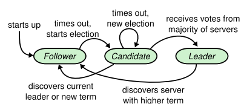
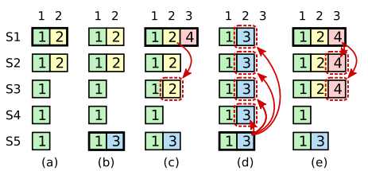
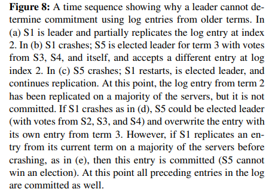
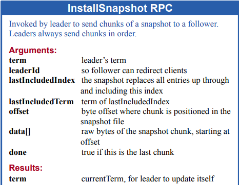
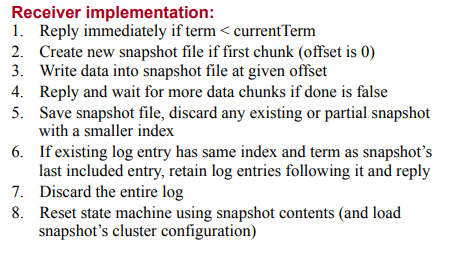

Raft: In Search of an Understandable Consensus Algorithm
A consensus algorithm for managing a replicated log
MIT Notes Part1 Part2
MIT FAQ Part1 Part2
Raft Basics
Raft decomposes the consensus problem into three relatively independent subproblems
- Leader Election
- Log replication
- Safety
- Properties
- Election Safety: at most one leader can be elected in a given term.
- Leader Append-Only: a leader never overwrites or deletes entries in its log; it only appends new entries.
- Log Matching: if two logs contain an entry with the same index and term, then the logs are identical in all entries up through the given index.
- Leader Completeness: if a log entry is committed in a given term, then that entry will be present in the logs of the leaders for all higher-numbered terms.
- State Machine Safety: if a server has applied a log entry at a given index to its state machine, no other server will ever apply a different log entry for the same index.
- Raft divides time into terms of arbitrary length. Used extensively in leader election and log matching.


1. Leader Election
- When servers start up, they begin as followers
- Leader sends periodic heartbeats (AppendEntries RPC with no log entries) to all followers to maintain authority.
- If follower receives no communication over
election timeout, then it assumes there is no viable leader and begins an election to choose a new leader. - Begin an election: follower increments its current term and transitions to candidate state, votes for itself and issue RequestVoteRPCs in parallel to each else
- Candidate continue in this state until one of three things happens: a. it wins b. other wins c. no one wins
- Candidate wins if it receives the majority of votes, voting is first-come-first-served.
- While waiting for votes, a candidate may receive an AppendEntries RPC from another server claiming to be leader. If its term is larger or equal than itself's, the candidate recognizes the leader as legit and returns to follower state
- Case : No one wins -> after timeout, new election (150ms - 300ms) - Raft uses randomized election timeouts to ensure that split votes are rare.
2. Log Replication
I. Steps
- Leader appends log entry to its own log
- Send AppendEntry to every server
- When the entry has been safely replicated (as described below), the leader applies the entry to its state machine and returns the result of that execution to the client.
II. Commit
- A log entry is committed once the leader that created the entry has replicated it on a majority of the servers
- Raft guarantees that committed entries are durable and will eventually be executed by all of the available state machines
- This also commits all preceding entries in the leader's log, including entries created by previous leaders
- Leader keep tracks of the highest index it knows to be committed, and it includes that index in future AppendEntries RPCs. Once a follower learns that a log entry is committed, it applies the entry to its local state machine.
III. Inconsistency Handling
- Leader maintains a
nextIndexfields for each follower. - It initializes
nextIndexvalues to the index just after the last one in its log. - If follower's log is inconsistent with the leader's, the AppendEntries RPC consistency check will fail in the next AppendEntries RPC.
- After a rejection, the leader decrements nextIndex and retries the AppendEntries RPC
3. Safety
- Ensure each state machine executes same commands in the same order
I. Election Restriction
- Candidate only elected as leader when its log is at least as up-to-date as any other log in that majority
- Raft determines which of two logs is more up-to-date by comparing the index and term of the last entries in the logs.
- Term1 > Term2 -> Term1 wins
- Term1 == Term2 -> Log with greater length wins
II. Committing entries from previous terms
 
- Never commits log entries from previous terms by counting replicas.
- Only log entries from the leader's current term are committed by counting replicas
- Once an entry from the current term has been committed in this way, then all prior entries are committed indirectly because of the Log Matching Property.
Log Compaction
InstallSnapshot RPC
- As Raft log grows without bound, it occupies more space and takes more time to replay on server startup.
- Snapshotting - saves entire system state to a snapshot on stable storage and the entire log up to that point is discarded.
- Each server takes snapshots independently covering just the committed entries in its log.
- Although servers normally take snapshots independently, the leader must occasionally send snapshots to followers that lag behind. This happens when the leader has already discarded the next log entry that it needs to send to a follower.
 
Summary